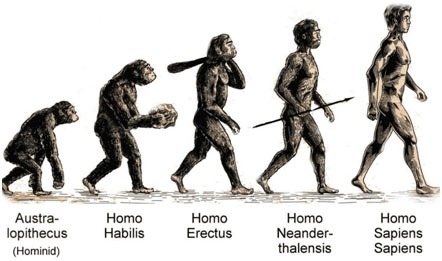

Introduction to Information Systems
Miraç Buğra Özkan
150200337
Evolution of homo species

You can find the link of the image below Biology Online
| Homo habilis | Homo erectus | Homo newandrethalenis | Homo sapiens |
|---|---|---|---|
| Handy man | Upright man | Neandertal | Wise man |
| ~2.3-1.65 million years ago | ~2 million years ago | ~40,000 years ago | ~13,000 years ago |
What are homo sapiens?
Homo sapiens is the species of all the highly developed primates on earth,
a category that living humans belong to.
These primates include humans,
apes,
lorises,
1
tarsiers,
lemurs,
monkeys